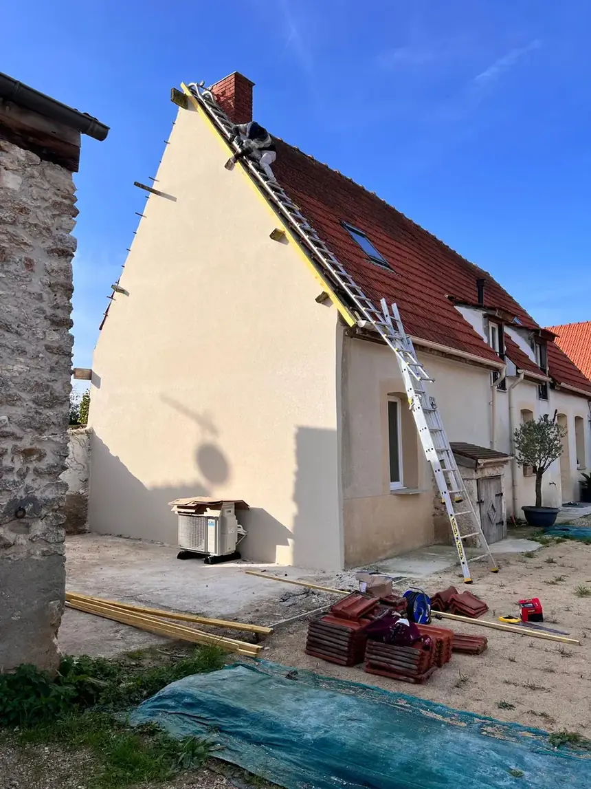
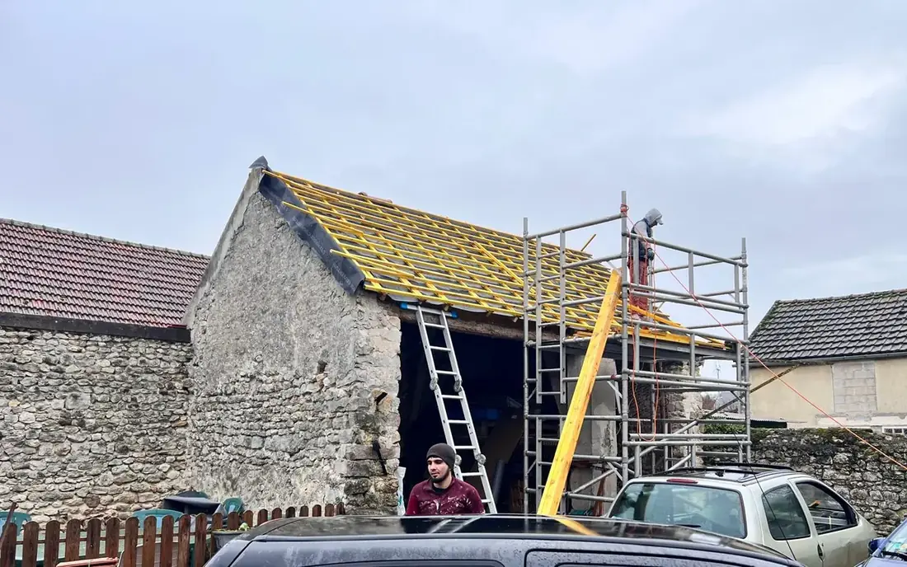
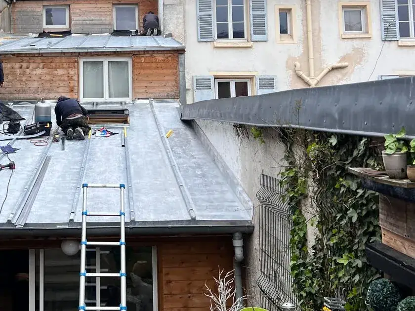
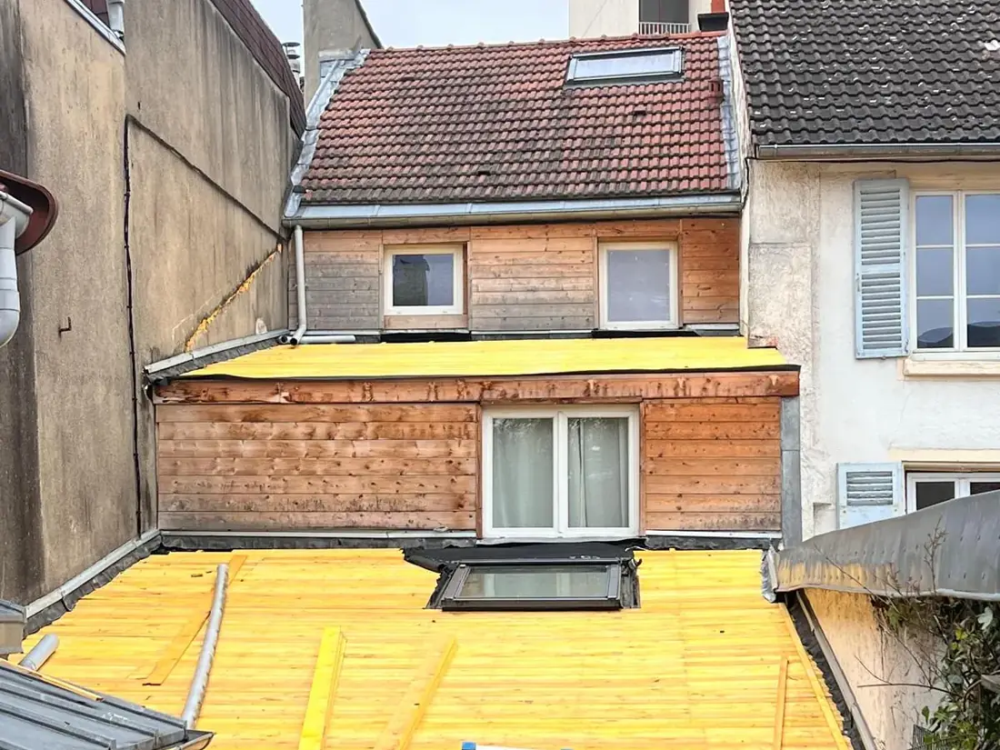
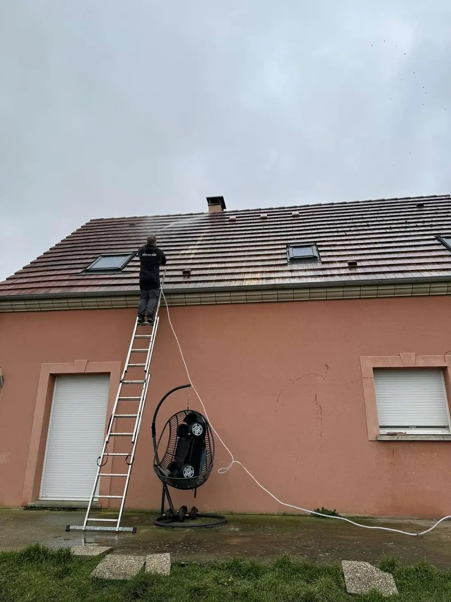
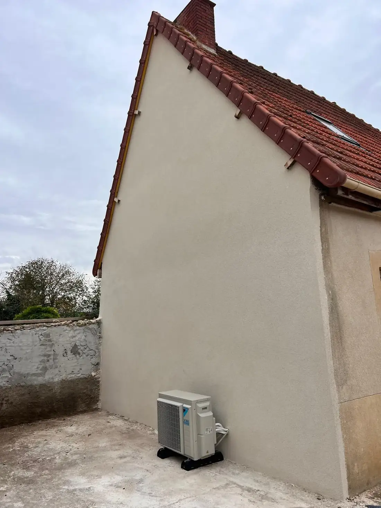
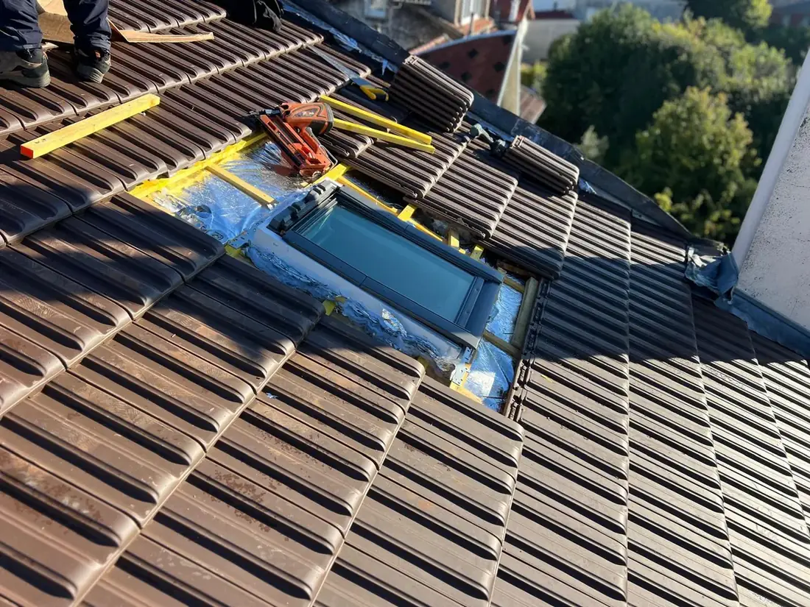
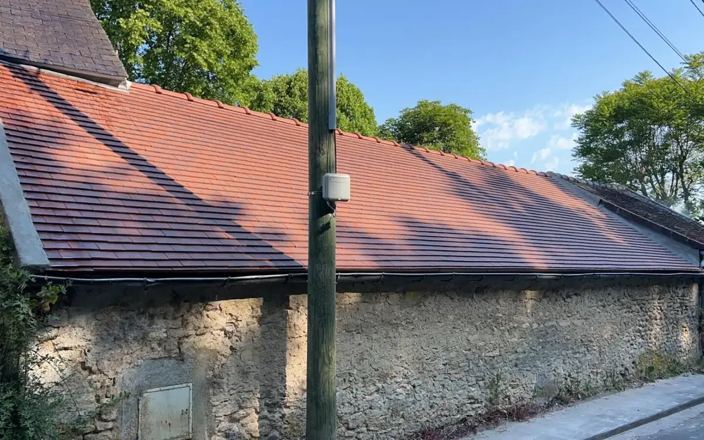
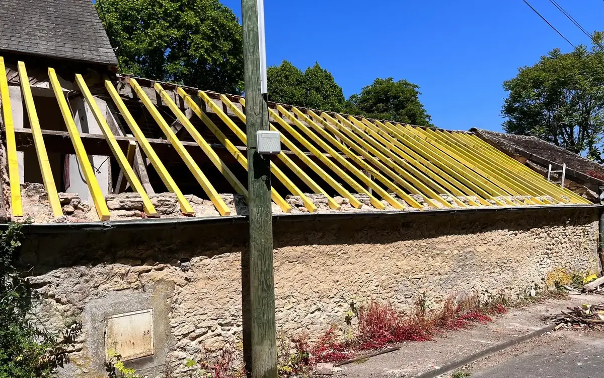

Couverture
Réfection totale ou partielle : tuile terre cuite, tuile mécanique, ardoise. Dépose de l'ancienne couverture, écran sous-toiture, liteaunage neuf et pose des tuiles.
Couverture · Zinguerie · Charpente — Essonne (91)
Vincent Rossalino refait votre toiture, répare une fuite, nettoie la mousse, reprend la zinguerie et ravale votre façade. Un seul interlocuteur du premier appel jusqu'au nettoyage du chantier.

Ce que je fais
De la charpente à la gouttière, du démoussage au ravalement. Vous appelez une seule entreprise, vous signez un seul devis.
Réfection totale ou partielle : tuile terre cuite, tuile mécanique, ardoise. Dépose de l'ancienne couverture, écran sous-toiture, liteaunage neuf et pose des tuiles.

Remplacement de pannes, chevrons et pièces attaquées par l'humidité ou les insectes. Traitement du bois, renfort de structure, charpente neuve sur petit bâti.

Gouttières, chéneaux, noues, solins, habillage de cheminée et de lucarne. Couverture zinc à joint debout sur les toits à faible pente.

Toitures plates, terrasses et vérandas. Reprise du support, membrane bitume ou EPDM, relevés et évacuations traités point par point.

Nettoyage haute pression, retrait des mousses et des lichens, traitement anti-mousse. La végétation retient l'eau et use la tuile.

Piquage, réparation des fissures, enduit de finition, peinture. Je reprends la façade et la rive de toit dans la même intervention.

Fuite, tuile cassée, faîtage descellé, gouttière arrachée après une tempête. Appelez le matin, je passe voir le toit dans la journée quand c'est possible.
Urgence toiture : 07 59 51 87 26Avant / Après
Deux toitures reprises de la charpente aux tuiles. Le curseur montre le même bâtiment avant le chantier et à la fin.


Glissez, ou utilisez les flèches du clavier. Double-clic pour revenir au centre.
Chantiers
Toitures, charpentes, zinc et façades dans le sud de l'Essonne. Filtrez par métier, cliquez pour agrandir.
Aucune photo dans ce métier pour le moment.
Comment ça se passe
Vous décrivez le problème. Je vous dis tout de suite si c'est une réparation ou une réfection, et si je peux passer vite.
Je monte sur le toit, je regarde la charpente depuis les combles et je prends les mesures. La visite ne coûte rien.
Sous 24 h, poste par poste : dépose, fournitures, main-d'œuvre, évacuation des gravats. Le prix annoncé est le prix payé.
Date fixée avec vous, bâchage, protection des abords. Je vous montre le travail fini et je repars avec les déchets.
Zone d'intervention
Basé au 4 chemin des Élans à Linas, j'interviens dans un rayon d'environ 25 km. Votre commune n'est pas dans la liste et se trouve à côté ? Appelez, on regarde ensemble.
Questions fréquentes
Oui. Le déplacement, la montée sur le toit et le chiffrage ne vous coûtent rien, que vous signiez ou non. Vous recevez le devis écrit sous 24 h après ma visite.
Pour une fuite active, j'essaie de passer dans la journée ou le lendemain. Je pose d'abord une bâche pour arrêter les dégâts, puis on décide de la réparation au calme.
Cela dépend de l'état du liteaunage, de la charpente et du nombre de tuiles cassées. Après la visite je vous dis ce qui tient encore et ce qui doit partir. Réparer une zone coûte moins cher que tout reprendre, quand c'est possible.
Comptez une journée pour un démoussage, deux à trois jours pour de la zinguerie, et une à deux semaines pour la réfection complète d'une toiture de maison. La météo décale parfois les dates.
Je travaille surtout dans un rayon de 25 km autour de Linas. Au-delà, appelez-moi : selon la taille du chantier je me déplace plus loin.
Contact
Le téléphone reste le plus rapide. Sinon remplissez le formulaire, je rappelle dans la journée.
Vincent Rossalino, artisan couvreur.
Je vous rappelle dans la journée. Si c'est urgent, appelez directement.
07 59 51 87 26